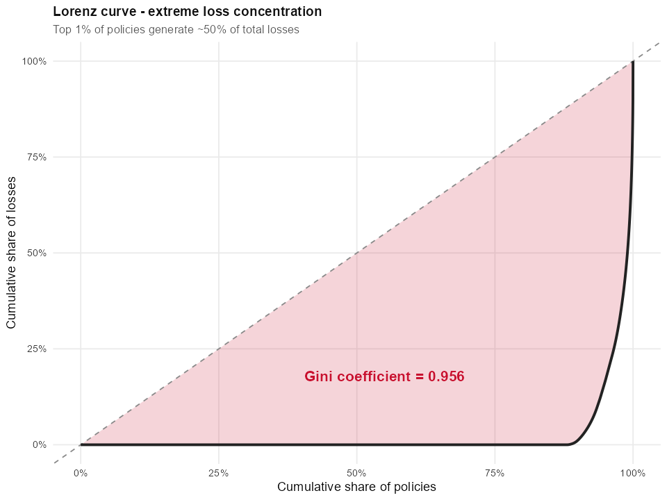

VISUAL ANALYTICS
& APPLICATIONS
A coursework portfolio exploring the grammar of graphics, statistical visualisation and interactive data exploration with R, ggplot2 and Quarto.
ISSS608 · MITB · Singapore Management University
Take-home Exercise 1
Motor Insurance
Portfolio Review
A visual-analytics study of a real-world Spanish motor-insurance portfolio — 354,000 records · 47 variables · 2022–2024 — investigating drivers of profitability and volatility.
- COMP-N policies crossed 100% Loss Ratio in 2024
- Cancelled policies run a 128% LR vs Active's 64% — adverse retention
- Gini = 0.956 — top 1% of policies generate ~50% of losses
- The deterioration is a pricing story, not a loss-cost story

Lorenz curve of incurred losses · Gini = 0.956
Anatomy of a
Broken Embargo
A visual-forensic reconstruction of an AI-agent communications system that leaked an embargoed merger one hour before its 6 PM deadline. 912 messages · 7 agents · 23 hourly rounds, rebuilt to answer one question: deliberate leak, or system breakdown?
- Role inversion: the Legal agent posted in public 0 times for two weeks, then 16 times on crisis day, while PR went silent
- Channel escape: anonymous posts appear for the first time in the entire fortnight
- Reasoning drift: private thought moves from deliberation, to reaction, to rationalization
- The verdict is neither malice nor malfunction, but rationalization at machine speed
"The embargo was not hacked and it did not crash. It was talked past."
Hands-on Exercises
ggplot2 Basics
The grammar of graphics — geoms, aesthetics, scales and themes.
→Beyond ggplot2
Annotations, faceting and the ggplot2 extension ecosystem.
→Interactive Data Visualisation
Bringing graphics to life with plotly, ggiraph and crosstalk.
→Distribution, Uncertainty & Statistics
Funnel plots and statistical visualisation with ggdist & ggstatsplot.
→Multivariate Data
Visualising correlations, clusters and high-dimensional structure.
→Network & Text Data
Modelling email networks and turning text into graphs with tidygraph, ggraph & tidytext.
→